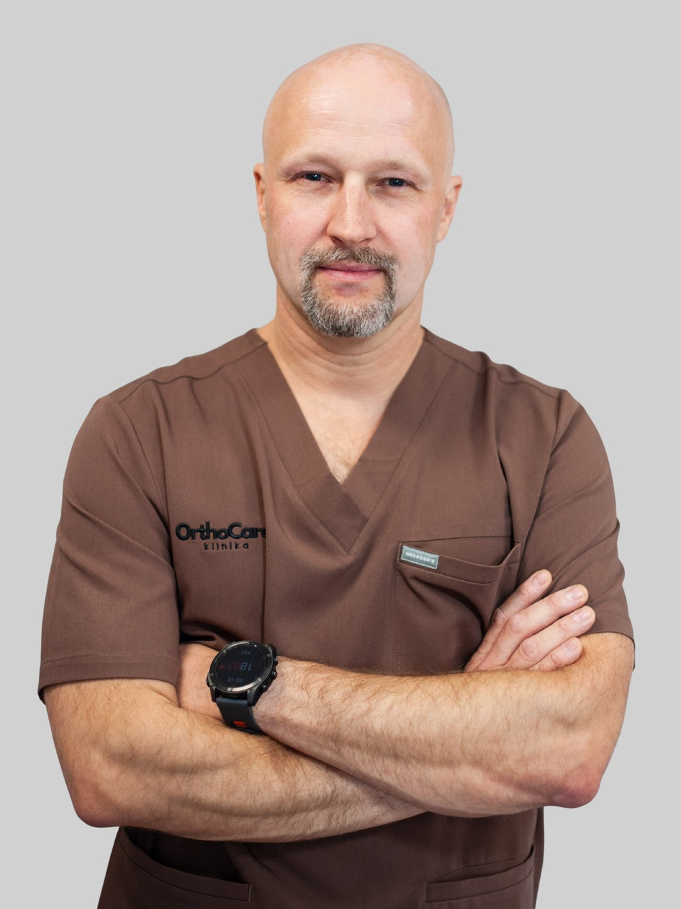

lek. Łukasz Kasprzak
Specjalista ortopedii i traumatologii narządu ruchu
Lek. Łukasz Kasprzak jest absolwentem Wydziału Lekarskiego Akademii Medycznej w Lublinie. Od 2004 roku zajmuje się kompleksowym leczeniem pacjentów w zakresie ortopedii i traumatologii, zarówno ambulatoryjnie, jak i operacyjnie. Tytuł specjalisty uzyskał w 2011 roku.
Specjalizuje się w leczeniu urazów i schorzeń kończyn dolnych i górnych – w szczególności w zakresie stawu kolanowego, barkowego, łokciowego i skokowego. W codziennej praktyce wykonuje nowoczesne zabiegi artroskopowe, w tym szycie i resekcję łąkotek oraz rekonstrukcje więzadeł krzyżowych (ACL). Zajmuje się również leczeniem zespołów bólowych kręgosłupa oraz schorzeń zapalnych i przeciążeniowych.
Uczestniczył w ponad 100 kursach, konferencjach i szkoleniach praktycznych z zakresu ortopedii i ultrasonografii. W swojej praktyce wykorzystuje zaawansowane metody terapii, takie jak iniekcje z kwasu hialuronowego, osocza bogatopłytkowego (PRP) oraz blokady przeciwzapalne pod kontrolą USG. Ceniony przez pacjentów za skuteczność, dokładność i zaangażowanie.
